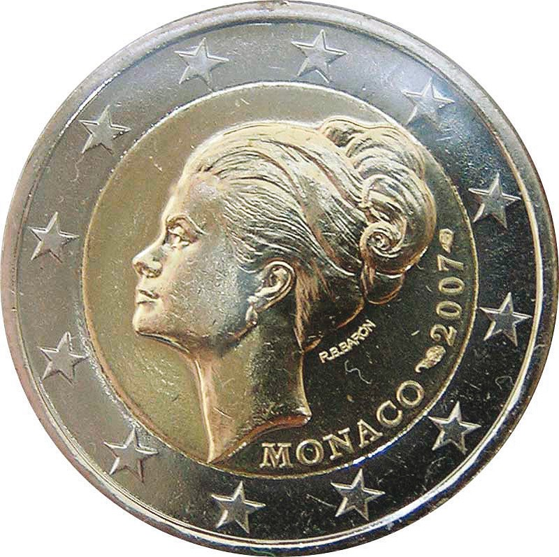
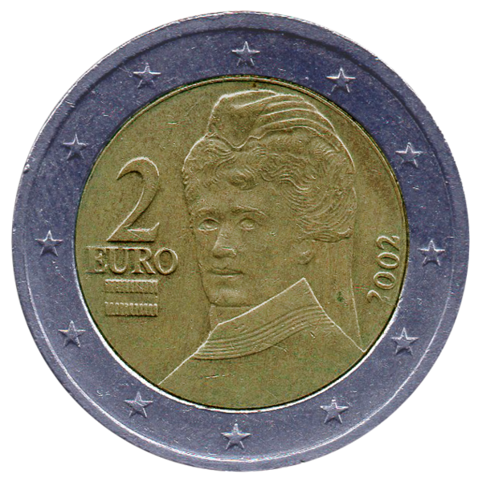
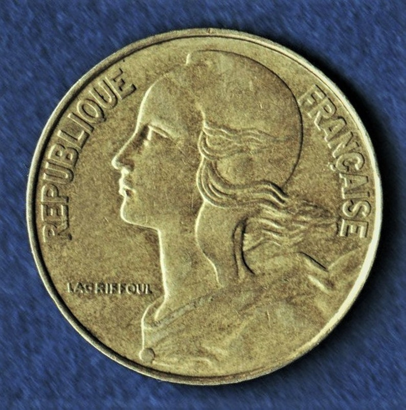
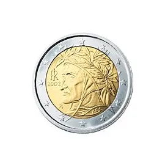
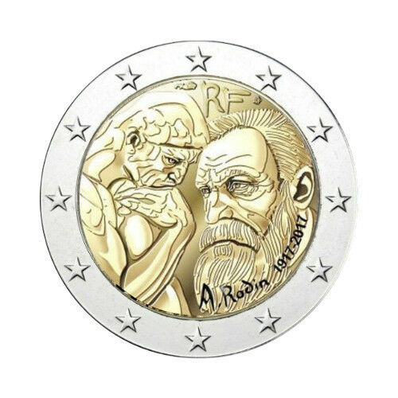
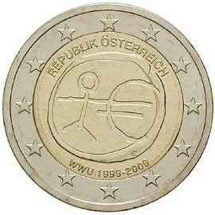
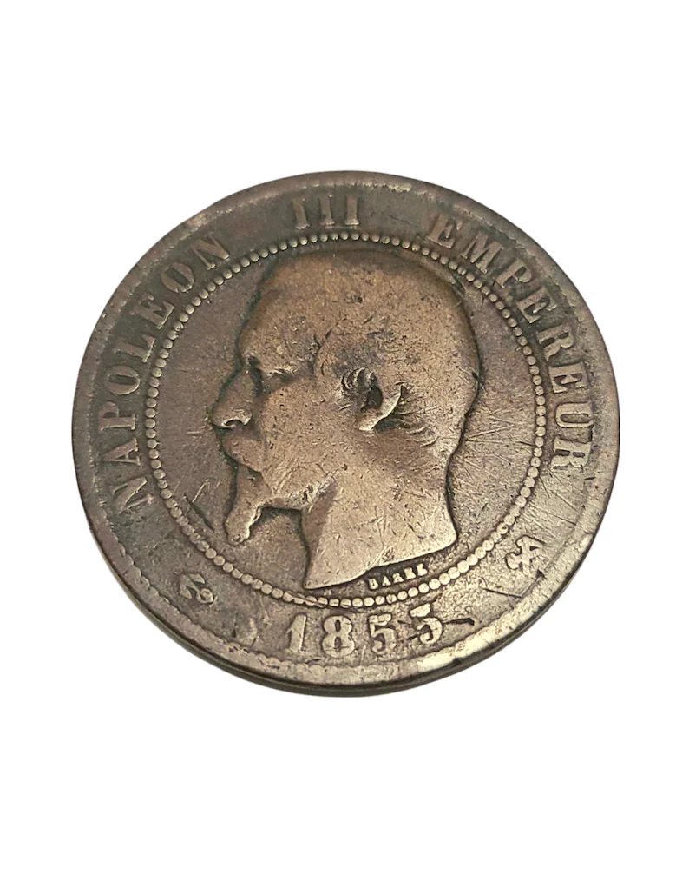
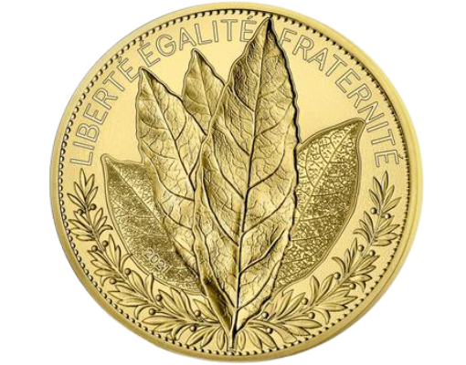

<!DOCTYPE html>
<html lang="fr">
   <head>
      <meta charset="utf-8"> 
      <title>MonnaieDuSiècle</title>
      <link rel="stylesheet" href="css/style2.css">
      <link rel="shortcut icon" href="https://cdn.shopify.com/s/files/1/0021/7887/5438/files/logo-final-pieces-et-monnaies1_32x32.png?v=1631615535" type="image/png">

   </head>
   
</html>
<body>
   <header class="main-head">
      <nav>
         <h1 id="logo"><a href="Accueil.html">Monnaie<font color="#F9A826">Du</font>Siècle</a></h1>
          <lu class="menu">
            <li>
               <a href="Accueil.html">Accueil</a>
            </li>
            <li>
               <a href="About.html">à propos</a>
            </li>
            <li>
               <a href="Contact.php">Contact</a>
            </li>
            <li>
               <a href="Nouvelle.html">Nouveau</a>
            </li>
         </lu> 
   </nav>
 </header>
    <nav>
 <section class="services">
      <div class="s-heading">
         <h1>Ser<font color="#F9A826">vic</font>es</h1>
         <p>Nous fournissons le meilleur des services à nos visiteurs .</p>
      </div>
      <div class="s-box-cont">
         <ul>
          <li> 
          <div class="s-box">
            <div class="bar"></div>
            
            <h1>La pièce 2€ Grace Kelly</h1>
            <p>La Principauté de Monaco a fait frapper la pièce en édition limitée,
            sur laquelle nous pouvons voir le profil de la Princesse Grace Kelly de Monaco.</p>
            <a class="s-btn" href="https://fr.numista.com/catalogue/pieces5036.html">Discover</a>
          </div> 
          </li>
          <li>
         <div class="s-box">
            <div class="bar"></div>
            
            <h1>1897 Finlande 5 Pennia </h1>
            <p>Finland: Denomination: 5 penniä: Year: 1896-1917: Period: Emperor Nicholas II (1895 - 1917) 
            Coin type: Circulation coins: Ruler: Nicholas.</p>
            <a class="s-btn" href="https://en.ucoin.net/coin/finland-5-pennia-1896-1917/?tid=27161">Discover</a>
         </div>
          </li>
          <li>
         <div class="s-box">
            <div class="bar"></div>
            
            <h1>Laurier - Monnaie de 5000€ Or BE - 2021</h1>
            <p>Symbole français magnifié par un traité moderne et graphique.</p>
            <a class="s-btn" href="https://www.pieces-et-monnaies.com/products/laurier-monnaie-de
            -5000-or-be-2021?currency=EUR&variant=39518391894062&utm_medium=cpc&utm_source=google&utm_
            campaign=Google+Shopping&gclid=CjwKCAiA1aiMBhAUEiwACw25MY6pDFn_VJeF4SHF
            -4tx1pljDCl-EiZLKtZLj8_MV8W5Eiwkv0QO7BoCZvEQAvD_BwE">Discover</a>
         </div>
          </li>
         </ul>
         <ul>
         <li> 
          <div class="s-box">
              <div class="bar"></div>
              
              <h1>Pièce de 2 euros 2002 DANTE - ITALIE*</h1>
              <p2>Euros Dante 2002 DANTE ALIGHIERI poète, écrivain et homme politique florentin 
               né entre la mi-mai et la mi-juin 1265 à Florence et mort le 14 septembre 1321 à Ravenne<p></p>
              <a class="s-btn" href="https://fr.shopping.rakuten.com/offer/buy/1705389432/piece-de-2-euros-2002-dante.html">Discover</a>
           </p2></div> 
         </li>
         <li>
            <div class="s-box">
               <div class="bar"></div>
               
               <h1>2 Euro commemorative coin 2017 "Rodin</h1>
                  <p>"Les lettres RF, représentant République Française, sont dessinées
                  comme sculptées sur le dessus de la pièce et le nom de l'artiste.</p>
               <a class="s-btn" href="https://www.philantologie.fr/2-euros-commemoratives/22549-2-euros-commemorative-france-2017-rodin.html?utm_source=google&utm_medium=cpc&gclid=Cj0KCQiA-eeMBhCpARIsAAZfxZBJUbSYKVLh2jLBd1EY-LfWVpOmh3sc1WePpcZI0s8eMs4rL_5ZL9oaAo9-EALw_wcB">Discover</a>
            </div>
         </li>
         <li>
            <div class="s-box">
               <div class="bar"></div>
               
               <h1> pièce 2 euros commémorative WWU" 1999 2009</h1>
               <p>Monnaie inestimable: pièce 2 euros commémorative WWU" 1999 2009 très rares avec faute de frappe.</p>
               <a class="s-btn" href="https://fr.shopping.rakuten.com/offer/buy/2683477335/
               monnaie-inestimable-piece-2-euros-commemorative-wwu-34-1999-2009-
               tres-rares-avec-faute-de-frappe.html">Discover</a>
            </div>
         </li>
         </ul> 
         <ul>
         <li> 
          <div class="s-box">
              <div class="bar"></div>
              
              <h1>Pièce de 2 euros 2002 DANTE - ITALIE*</h1>
              <p2>Euros Dante 2002 DANTE ALIGHIERI poète, écrivain et homme politique florentin 
               né entre la mi-mai et la mi-juin 1265 à Florence et mort le 14 septembre 1321 à Ravenne.<p></p>
              <a class="s-btn" href="https://fr.shopping.rakuten.com/offer/buy/1705389432/piece-de-2-euros-2002-dante.html">Discover</a>
           </p2></div> 
       </li>
       <li>
           <div class="s-box">
              <div class="bar"></div>
              
              <h1>1855 Pièce de monnaie - Napoléon III Empereur</h1>
                 <p>"1855 Pièce de monnaie - Napoléon III Empereur, Empire Francais, Dix Centimes, B, France,
                     Pièce de collection, Distribué.</p>
              <a class="s-btn" href="https://www.ebay.com/itm/France-2-Euro-commemorative-coin-2017-Rodin-UNC-NEW/112297884343">Discover</a>
           </div>
       </li>
       <li>
         <div class="s-box">
            <div class="bar"></div>
            
            <h1>20 Centimes 1974 de France</h1>
               <p>"RARE, UNIQUE ET TRÈS PRÉCIEUX !</p>
            <a class="s-btn" href="https://www.ebay.com/itm/France-2-Euro-commemorative-coin-2017-Rodin-UNC-NEW/112297884343">Discover</a>
         </div>
        </li>
         </ul> 
      </div>
 </section>
   </nav>
   <article>
   </article>
   <footer>
      <div class="icon">
         <a href="https://www.instagram.com/aminzeryouhi/">
              
         </a>
         <a href="https://www.facebook.com/profile.php?id=100005765748533">
             
         </a>
         <a href="https://twitter.com/zeryouhi_amin">
             
         </a>
      </div>
      <p>©SFCV -<a href="mentions Légales">
         mentions Légales</a>.</p>
   <p>Au monde il exeste nombreuse piéces extrement rars</p>      
   </footer>

</body>
